Vowborn · Pouso do Sino
Guardião
No Pouso do Sino, a primeira noite de monstros não teve exército.
Teve gente comum de pé na cerca, até o dia nascer. Dali nasceu o Voto: enquanto houver quem não luta, ninguém dorme sem guarda. O Guardião é esse voto com escudo e espada. Carrega no peito um amuleto-sino, e cada cordão amarrado nele é de alguém da Guarda que caiu. Não luta para vencer. Luta para que ninguém fique para trás. Agora os sinos-portal de Ermândia estão apagados, e ele leva o Voto para fora da vila, de sino em sino, até o norte.
Habilidades
Juramentos: escolhe 1 de 3 juramentos ativos (Proteger, Resistir, Vingar); cada um impõe uma condição e libera técnicas enquanto cumprida.
- Caminho AJuramento coletivo, o grupo vira uma fortaleza.
- Caminho BMuralha sozinha, quase imortal e lenta.
Desafio
- GGolpe de EscudoNível 1 · Ativa · 12 de estamina · recarga 6 s
Batida seca com a face do escudo: atordoa o alvo por 0,6 s.
- PProvocarNível 8 · Ativa · 8 de estamina · recarga 12 s
Ruge e atrai a atenção dos monstros próximos.
Requer Golpe de Escudo - IInvestida de AríeteNível 20 · Ativa · 20 de estamina · recarga 14 s
Avança 5 m com o escudo à frente, empurra o alvo da rota 3 m.
Requer Golpe de Escudo - CCorrente de DesafioNível 26 · Ativa · 12 de estamina · recarga 10 s
Puxa um inimigo distante até o escudeiro.
Requer Provocar - QQuebra-GuardaNível 26 · Ativa · 12 de estamina · recarga 9 s
Alvo único, 2,5 m.
Requer Investida de Aríete - RRompe-FileiraNível 46 · Ativa · 35 de estamina · recarga 16 s
Avança 8 m atravessando até 6 alvos (preparação 0,45 s).
Requer Quebra-Guarda - TTerremoto do EscudoNível 46 · Ativa · 35 de estamina · recarga 14 s
Golpe em cone que provoca e contém os inimigos atingidos.
Requer Corrente de Desafio
Guarda
- GGuarda FirmeNível 4 · Passiva
Bloquear custa menos estamina.
- PPele de FerroNível 16 · Passiva
Aumenta a defesa de forma permanente.
Requer Guarda Firme - MMuralha de EscudoNível 20 · Ativa · 20 de estamina · recarga 30 s
Planta o escudo por alguns segundos e protege quem está atrás.
Requer Pele de Ferro - ÍÍmpetoNível 32 · Passiva
Depois de um avanço seu (Investida, Rompe-Fileira ou esquiva), por 5 s: +1% de dano e +1% de velocidade de movimento por nível (+10% e +10%).
Requer Pele de Ferro - CCasco de AríeteNível 40 · Passiva
Durante um avanço e 2 s depois: imune a empurrão e derrubada e -1% de dano recebido por nível (-10%).
Requer Ímpeto - TTorre InabalávelNível 40 · Passiva
Imune a empurrão ao bloquear e regenera mais estamina.
Requer Muralha de Escudo - AAríete ErguidoNível 52 · Ativa · 20 de estamina · recarga 24 s
Por 6 s (+0,3 s/nível → 8,7 s): -20% de dano recebido (+1%/nível → -29%).
Requer Casco de Aríete
Juramento
- RRevideNível 12 · Ativa · 12 de estamina · recarga 8 s
Abre uma janela de guarda.
Requer Guarda Firme - JJuramento de GuardaNível 32 · Passiva
Enquanto bloqueia, aliados próximos sofrem menos dano.
Requer Revide - IInterceptarNível 52 · Ativa · 20 de estamina · recarga 20 s
Avança até um aliado e divide com ele o dano recebido.
Requer Juramento de Guarda
Evoluções
A classe muda de nome e de jeito de jogar conforme sobe. No nível 40 você escolhe um caminho, e ele vale até o fim.
- 1GuardiãoEspada e escudo, segura o inimigo.
- 20SentinelaAprende a segurar a linha e a jurar; o ramo vem no 40.
Caminho AJuramento coletivo, o grupo vira uma fortaleza
- 40JuramentadoCumpre juramentos para dar bônus ao grupo; mais regras, mais recompensa.
- 60FiadorJuramentos duplos: o grupo inteiro entra no voto.
- 80Fiador-MorSalto de poder (classe nova) · detalhes.
- 100Voto EternoO juramento vale para a cidade inteira.
- 130Juramento VivoForma final, adorno em cristal vivo · detalhes.
Caminho BMuralha sozinha, quase imortal e lenta
- 40BaluartePuro bloqueio e absorção; simples e sólido.
- 60Bastião VivoVira parede móvel que devolve parte do dano.
- 80Colosso de BronzeSalto de poder (classe nova) · detalhes.
- 100Fortaleza ImortalUma muralha que ninguém derruba.
- 130Muralha EternaForma final, adorno em cristal vivo · detalhes.
Visual por nível
O traje e a arma mudam a cada patamar da classe.
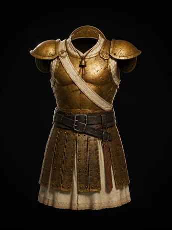
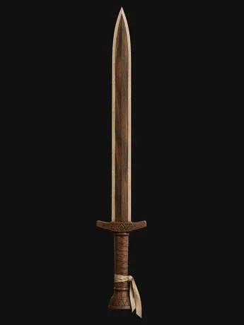
Nível 1Guardião
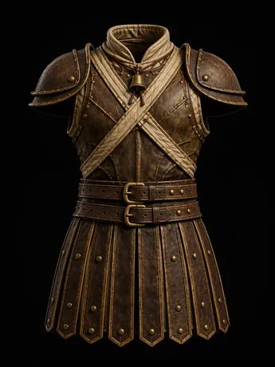
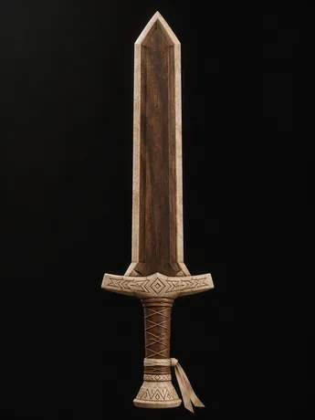
Nível 6Couro Curtido
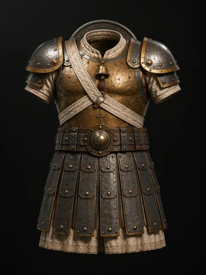
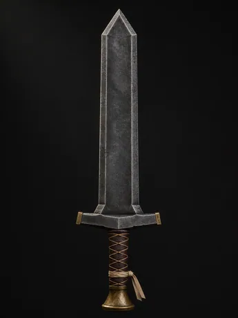
Nível 11Ferro
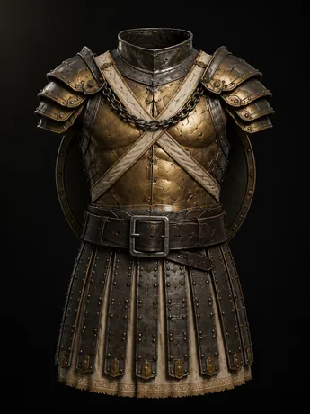
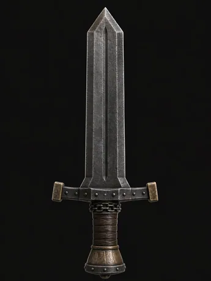
Nível 15Ferro Reforçada
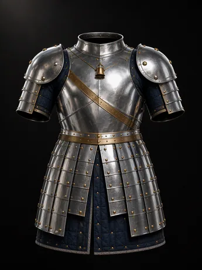
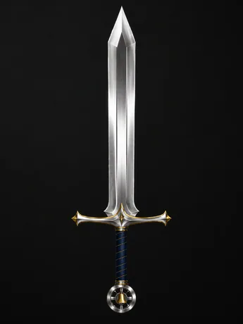
Nível 21Aço Temperado
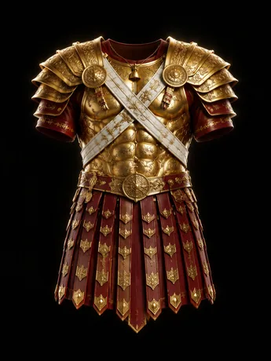
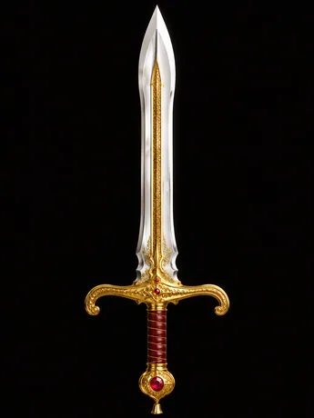
Nível 26Guarnição
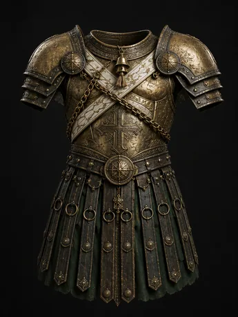
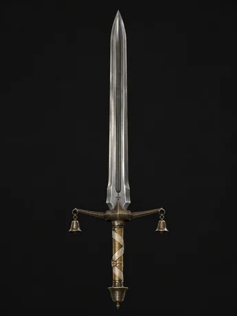
Nível 31Bronze Rúnico
Os trajes dos níveis 32 a 60 chegam em breve.